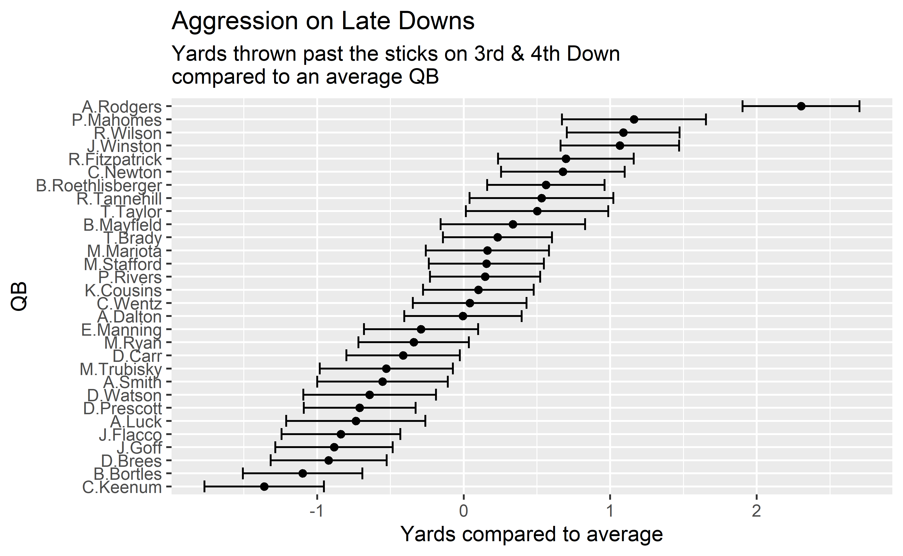
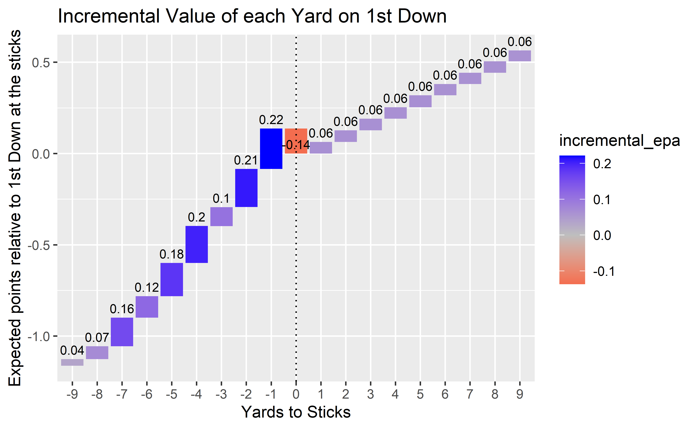

Table of Contents
Still Elite?
Week 1 of the 2020 NFL season brought about an MVP caliber display from Rodgers as he torched my beloved Vikings for 43 points. He put up over 0.4 epa/play on more than 40 dropbacks against a Mike Zimmer defense, which has only happened 2 times before in Zimmer’s career as a head coach 1. PFF subsequently rewarded him with a grade of 96.0, the highest week 1 grade that’s been given since Tom Brady’s 96.9 in 2011.
He followed this up with another MVP level performance in week 2 receiving the 2nd highest PFF grade of the week and leading the offense to another 40 point game as the Packers comfortably swept aside the Lions.
Thankfully for this piece, that was supposed to go out pre-season, Rodgers maintained his MVP form in week 3 against the Saints achieving the 4th highest grade of the week from PFF leading to another high scoring game for the Packers who ended up with 37 points.
So far the Packers have racked up 3.73 points per drive and are one of only 3 teams to be averaging over 40 points through the first 3 games in the play-by-play era 2
We’re now almost a year on from Ben Baldwin’s piece on Aaron Rodgers demise, and I thought it would be worth checking what the numbers say about his performance, especially giving his rampant start to the season.
Best evaluation metrics
We can start off with a piece of analysis done by Baldwin himself showing that for 2016-2019 SIS Total points was the best predictor of future performance. PFF offensive grade also comes out well in this analysis so let’s start by looking at these two metrics over the past four years.
Here’s the leaderboard for SIS Total points in 2019
Rodgers was comfortably the most valuable player by Total Points in 2019 so perhaps the talks of his demise were too soon. A great article from Mike Sando shows how last year Rodgers was negatively affected more by drops than in previous acclaimed years, something that SIS total points takes into account, but raw epa does not.
Rodgers currently sits in 2nd for SIS total points in 2020, carrying on his good performance in the metric from the prior year.
If we switch to play grading rather than epa analysis Rodgers still came out as elite over recent times. In his recent ranking of NFL quarterback’s Sam Monson stated that Rodgers ranked as the 4th best Quarterback of the past 2 years.
The issue with just using raw epa per play is that although it improves on yardage totals it still misses out on a lot of context (e.g. receivers, defense, game conditions), a lot of which can be accounted for with data that’s available in the nflfastR play-by-play; so let’s have a go at creating our own QB metric and see how it changes things.
First let’s load the data:
library(tidyverse)
library(mgcv)
library(mixedup)
pbp <- map_df(2016 : 2019, ~{
readRDS(
url(
glue::glue("https://raw.githubusercontent.com/guga31bb/nflfastR-data/master/data/play_by_play_{.}.rds")
)
)
}) %>% mutate(to_sticks = air_yards - ydstogo,
passer30 = fct_lump_n(passer , 30),
receiver100 = fct_lump_n(receiver , 100),
log_ydstogo = log(ydstogo))
dbs <- pbp %>% filter(!is.na(passer), !is.na(epa))Initial Look
Let’s start by ranking QB’s by epa/play since 2016 and see how it looks:
We can see that Rodgers ranks 7th in this time-frame, which in itself isn’t bad, but it’s far away from his elite heights of 2011-2015 where he ranks 1st in epa/play by a wide margin.
But we can do better than just average epa per play, we know the receivers that QBs throw to on every attempt, we know the defenses they faced on every dropback, we know the down, yardline, and yards to go for every snap; so let’s account for this and come up with a metric that contains much more context and therefore is much more representative of true ability.
Looking at epa/play since 2016 we can see that Garoppolo (2nd), Nick Mullens (11th), and Drew Lock (12th) 3 are far too high; Rodgers (7th), and Russ (14th) are too low. Let’s see if adjusting for additional context changes our rankings at all.
How to improve on epa/play
First of all we can see the value an average QB would generate from the type of play they perform on a particular dropback (take a sack, throw the ball away, scramble, or throw the ball a certain distance downfield). We can think of this as a mixture of decision making and running ability. This can be done by assigning a play it’s epa value on all non-pass attempts, and then assigning the average value of a play on a pass attempt through modelling.
Next we can then see how a QB outperforms pass attempts in regards to the throwing component (air EPA) and the yards after catch component (YAC EPA), then combine these with the first part to give us a combined view on:
- Play Quality - How good a QB is at avoiding pressure and getting a good type of throw off or a high quality scramble.
- Air Yards - How good a QB is at completing passes above expectation and generating air EPA
- Yards After Catch - How good a QB is at hitting receivers in stride and generating YAC EPA
We’re going to do this by including the passer as a random effect in our model that predicts the epa of a play. We will include as much context as possible by including down, distance, yardline, and many other variables. In the 2nd and 3rd model we can also include receiver to adjust for qbs that either have a great/poor supporting cast. We’ll make sure to include shrinkage throughout the models to avoid overfitting as much as possible.
Doing this gives us the following:
We can see straight away that this aligns much better with a consensus ranking of how players performed between 2016-2019.
Garoppolo moves from 2nd to 11th; Mullens from 11th to 27th, Lock from 12th to 20th. These three seem to either benefit from scheme or just small sample sizes so good to see that the model accounts for both here.
On the other side of things Russ moves up from 14th to 9th and Rodgers from 7th to 2nd. Both these players are clearly better than their epa ranking and our model seems to pick up on this, but what exactly causes these changes?
What makes Rodgers great?
If we look at the previous table we can see Rodgers is above average in all three components but in particular his effective pass accuracy shown by the air yards component is what stands out. One of the noticeable adjustments made that seem to help him stems from teams faced, if we look at the top ten defenses against air yards EPA we find 4 of the 10 were division rivals
# A tibble: 10 x 2
team value
<chr> <dbl>
1 2019.NE -0.051
2 2019.SF -0.036
3 2018.CHI -0.032
4 2016.DEN -0.031
5 2017.DET -0.026
6 2017.MIN -0.025
7 2018.BUF -0.022
8 2017.JAX -0.022
9 2017.LAC -0.021
10 2018.MIN -0.021And Mike Zimmer’s teams were easily the best in the league defensively
# A tibble: 8 x 2
team value
<chr> <dbl>
1 Mike Zimmer -0.018
2 John Harbaugh -0.013
3 Bill Belichick -0.012
4 Andy Reid -0.011
5 Doug Marrone -0.01
6 Gary Kubiak -0.009
7 Sean McDermott -0.009
8 Ben McAdoo -0.007But this adjustment is relatively small in the grand scheme of things, the main adjustment that benefits both his air yards component and play quality component is rather surprising, considering his reputation, but this is what I found:
mdl_3d <- bam(to_sticks ~ te(log_ydstogo , yardline_100) + s(passer30 , bs = "re") ,
data = dbs %>% filter(!is.na(receiver), !is.na(air_yards), down >= 3) ,
select = T , discrete = T)
###
df_re_3d <- (extract_random_effects(mdl_3d)) %>%
mutate(QB = fct_reorder(.f = group, .x = value, .fun = mean)) %>%
filter(QB != "Other")
plot_3d <- ggplot(df_re_3d, aes(x=value, y=QB)) +
geom_errorbar(aes(xmin=value-se, xmax=value+se)) +
geom_point() +
labs(title = "Aggression on Late Downs" ,
subtitle = "Yards thrown past the sticks on 3rd & 4th Down
compared to an average QB ",
x = "Yards compared to average")
plot_3d
Rodgers is by far the most aggressive QB in the league on late downs and it isn’t particularly close. Given his reputation of being too conservative this came as a big shock to me. The reason behind it is the fact that Rodgers is conservative on early downs and then flips the switch for late downs. It seems like Rodgers was one step ahead of the game as it makes a lot of sense to be conservative on early downs when yards before the sticks have high relative importance, and aggressive on later downs when yards before the sticks have almost zero importance.
Here’s how much each individual yard before the sticks is worth on 1st down:

And the same again on 3rd down

We see that gaining 8 yards (-2 yards to sticks) on 1st and 10 is similar to gaining 10 yards, while gaining 9 yards on 1st down is similar to gaining 12 yards. Therefore a QB who threw for 9 yards on every 1st down would be more valuable than a QB that threw for 11 yards. On 3rd down we see that the only thing that matters is getting to the first down marker. Rodgers is the only QB that seems to throw with this in mind, he thrives in the short passing game on early downs, and then attacks downfield when needed on later downs.
In general QB’s can add much more repeated excess value on 3rd downs than they can on 1st. Phillip Rivers was the best QB on 1st downs in this time frame and added ~0.15 epa/play over a replacement QB. Compare this to Rodgers who, although worse than Rivers on 1st downs, performed 0.38 epa/play better than a replacement QB on late downs. Mahomes was even better on late downs, although he benefited from a better receiving corps and is probably due for some regression since he isn’t even close to Rodgers’ level of aggression 4
On 1st down it probably just makes sense to aim for a successful play, and defenses seem to defend heavily beyond the sticks so aiming for passes between 5-9 yards downfield is probably ideal. We can show this by looking at success rates by air yards on 1st down; where we see that success rate peaks at ~6 air yards, illustrating the benefit of the mid/short passing game on a fresh set of downs.
# A tibble: 10 x 3
air_yards success_rate count
<dbl> <dbl> <int>
1 3 0.493 1353
2 4 0.537 1659
3 5 0.654 1881
4 6 0.707 1203
5 7 0.683 845
6 8 0.65 686
7 9 0.655 733
8 10 0.569 771
9 11 0.570 689
10 12 0.562 632In a similar vain to his peerless understanding of pass optimisation based on situation, he laps the league in aggression on defensive offside penalties, again Rodgers has an adept understanding of when to throw deep and when to throw short that no other QB seems to be able to emulate.
Still Elite!
So we’ve shown that with the abundance of data we have we can get a much clearer view on the value of a QB than just ranking by yards per play, or epa per play, and there are still plenty of improvements to be made from here! If we understand the volatility of different play types and how predictive certain situations are we can further improve our model, potentially splitting up into further components to get even more context on what makes every single QB good or bad.
For now though we can say that all the best information we have pointed towards Rodgers having an MVP caliber season, and that’s exactly what we’ve seen so far. The quality of teams faced and the quality of the player’s team can having a significant impact on their performance. Davante Adams and Allen Lazard are both expected to miss week 4 with injuries so we may see a fall from grace this week in terms of epa/play, but this just further emphasises the point of how much context matters in the evaluation process.
Dak last year, and Tanehill in 2014↩︎
along with the Peyton-led 2013 Broncos and the Palmer-led 2015 Cardinals↩︎
and possibly Lamar (4th) due to his replacement level 2018 season combined with MVP-level 2019 should probably rank him 10-15th overall↩︎
although, you know, he’s Pat Mahomes so he’ll probably just get even better↩︎